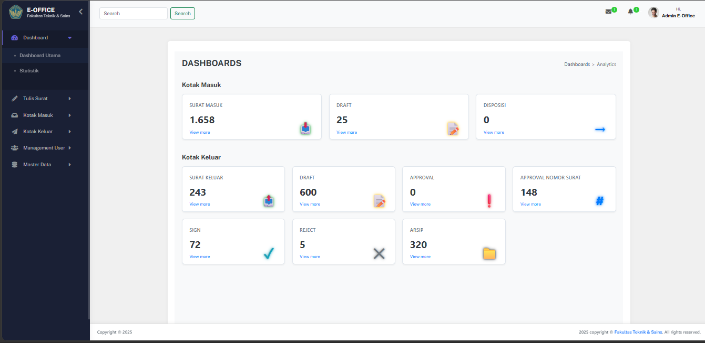
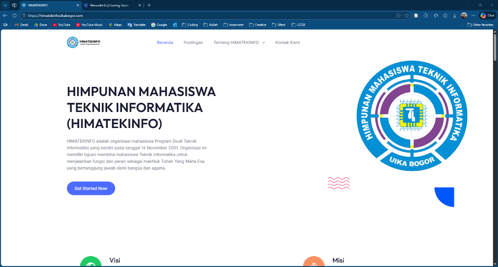
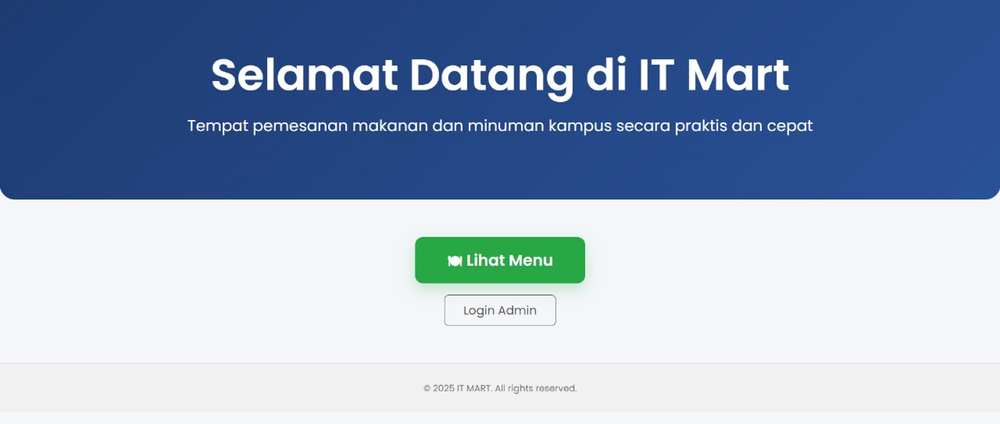

HTML
Menyusun struktur halaman website.
MAHASISWA INFORMATIKA | UNIVERSITAS IBN KHALDUN BOGOR
Berfokus mengembangkan keahlian Frontend Web Development secara praktis, meliputi pembuatan desain UI/UX, prototipe interaktif, serta penerjemahan desain menjadi aplikasi web yang responsif.
KENALI SAYA
Mahasiswa S1 Teknik Informatika Universitas Ibn Khaldun Bogor dengan minat mendalam pada Frontend Web Development dan UI/UX Design. Memiliki pengalaman merancang antarmuka serta mengimplementasikan aplikasi web berbasis React.js dan Figma melalui berbagai pengerjaan proyek.
KEMAMPUAN
Menyusun struktur halaman website.
Mengatur tampilan dan tata letak website.
Mempelajari interaksi dan perilaku halaman web.
Membuat UI/UX Design, Wireframing, Prototyping,.
KARYA SAYA

Proyek
Sistem E-Office FTS UIKA Bogor adalah platform terintegrasi yang mendigitalisasi layanan administrasi persuratan. Aplikasi ini mengelola pencatatan arsip hingga pengiriman disposisi berjenjang guna menciptakan alur kerja yang transparan dan real-time.
Teknologi: React.js, Vite, JavaScript, HTML, CSS, Figma
Lihat Detail Proyek →
Tahap Perencanaan
Pengembangan dan pengelolaan portal informasi digital HIMATEKINFO. Proyek ini bertujuan menjembatani komunikasi organisasi dengan audiens melalui penyediaan informasi program kerja yang mudah diakses, responsif, dan transparan.
Teknologi: JavaScript, HTML, CSS
Lihat Detail Proyek →
Tahap Perencanaan
Website E-Commerce IT Mart adalah platform digital yang dirancang untuk memodernisasi operasional warung kampus di Lab Teknik Informatika Universitas Ibn Khaldun Bogor. Sistem ini menyediakan fitur katalog produk jajanan, pembayaran digital, serta kemudahan bagi admin untuk memantau stok dan transaksi secara real-time.
Teknologi: React.js, JavaScript, HTML, CSS
Lihat Detail Proyek →TERHUBUNG
Siap berkontribusi dan menimba pengalaman profesional dalam tim pengembangan perangkat lunak, dengan fokus utama pada Frontend Web Development dan perancangan UI/UX.